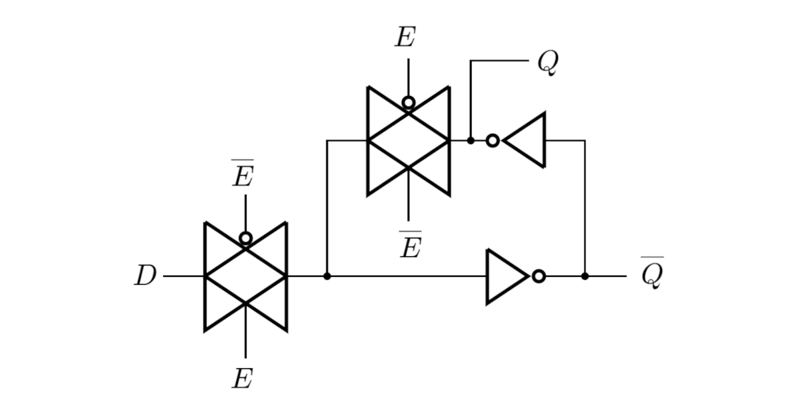

ความรู้พื้นฐานเกี่ยวกับไอซีลอจิกประเภท "แลตช์" (Latches)#
Keywords: Digital Logic Gate ICs, Latches
▷ Latches#
"แลตช์" (Latch) เป็นวงจรอิเล็กทรอนิกส์ในกลุ่มวงจรลอจิก (Logic Ciruit) การทำงานของแลตช์ จะถูกกระตุ้นด้วยระดับแรงดันหรือค่าลอจิกของสัญญาณควบคุม (Level-Sensitive หรือ Level-Triggered) แบ่งเป็นสองกรณีคือ ทำงานเมื่อสัญญาณควบคุม มีลอจิกเป็น L (Low) หรือ H (High) อย่างใดอย่างหนึ่ง
"ฟลิปฟลอป" (Flip-Flop) เป็นวงจรอิเล็กทรอนิกส์ในกลุ่มวงจรลอจิกอีกประเภทหนึ่งที่มีความแตกต่างจากแลตช์ กล่าวคือ การทำงานของฟลิปฟลอปจะถูกกระตุ้นด้วยการเปลี่ยนแปลงระดับลอจิก (Logic-Level Transition) ของสัญญาณควบคุม (Edge-Triggered) ซึ่งโดยทั่วไปก็คือสัญญาณนาฬิกา (Clock Signal) แบ่งเป็นสองกรณีคือ ขอบขาขึ้น (Rising or Positive Edge) หรือ ขอบขาลง (Falling or Negative Edge) อย่างใดอย่างหนึ่ง
แลตช์ และ ฟลิปฟลอป แต่ละตัว สามารถเก็บข้อมูลขนาดหนึ่งบิตได้ ดังนั้นจึงมีค่าลอจิกเป็น L (0) หรือ H (1) และมีการเปลี่ยนสถานะลอจิกได้ระหว่างสองสถานะดังกล่าว
ในบทความนี้จะกล่าวถึง หลักการทำงานของแลตช์ ซึ่งจำแนกออกได้หลายประเภท เช่น
- "ดี-แลตช์" (D Latch หรือ เรียกว่า Transparent Latch)
- มีขาอินพุต (Enable)
- มีขาเอาต์พุต และ (Inverted Q)
- "เอส-อาร์-แลตช์" (S-R Latch)
- มีขาอินพุต (Set) และ (Reset)
- มีขาเอาต์พุต และ
- "เจ-เค-แลตช์" (J-K Latch)
- มีขาอินพุต (Set) และ (Reset)
- มีขาเอาต์พุต และ
▷ SR Latches#
ถัดไปเป็นการอธิบายหลักการทำงานของวงจร S-R Latch และสามารถสร้างได้ง่ายโดยใช้ลอจิกเกตพื้นฐานอย่างเช่น NAND2 หรือ NOR2 ตามผังวงจรในรูปต่อไปนี้
รูป: ไดอะแกรมของวงจร "แลตช์" ที่สร้างด้วยลอจิกเกต NOR2 หรือ NAND2 อย่างละ 2 ตัว
การทำงานของวงจรแลตช์ที่สร้างจากลอจิกเกต NOR2 จำนวน 2 ตัว นำมาต่อไขว้กัน (Cross-Coupled) ตามรูปข้างบน (ซ้ายมือ) เป็นดังนี้
- ถ้า และ จะทำให้เอาต์พุต และ หรือ การรีเซตค่า
- ถ้า และ จะทำให้เอาต์พุต และ หรือ การเซตค่า
- ถ้า และ จะไม่ทำให้เอาต์พุตทั้งสองเปลี่ยนแปลงค่าลอจิก และคงสถานะเดิมไว้ ดังนั้นจึงกล่าวได้ว่า สัญญาณ และ ในกรณีนี้ ทำงานแบบ Active-High
- และ ห้ามมีค่าเป็น พร้อมกัน ในกรณีนี้ จะทำให้เอาต์พุต ซึ่งไม่ถูกต้อง เพราะว่าขา และ จะต้องมีค่าลอจิกตรงข้ามกันเสมอ
| Function | ||||
|---|---|---|---|---|
| 0 | 0 | No Change | ||
| 0 | 1 | 0 | 1 | Reset |
| 1 | 0 | 1 | 0 | Set |
| 1 | 1 | 0 | 0 | Invalid |
การทำงานของวงจรแลตช์ที่สร้างจากลอจิกเกต NAND2 จำนวน 2 ตัว นำมาต่อไขว้กัน ตามรูปข้างบน (ขวามือ) เป็นดังนี้
- ถ้า และ จะทำให้เอาต์พุต และ หรือ การรีเซตค่า (ดังนั้นจึงกล่าวได้ว่า ทำงานแบบ Active-Low)
- ถ้า และ จะทำให้เอาต์พุต และ หรือ การเซตค่า (ดังนั้นจึงกล่าวได้ว่า ทำงานแบบ Active-Low)
- ถ้า และ (สัญญาณทั้งสองไม่อยู่ในสถานะ "แอคทีฟ") จะไม่ทำให้เอาต์พุตทั้งสองเปลี่ยนแปลงค่าลอจิก และคงสถานะเดิมไว้ ดังนั้นจึงกล่าวได้ว่า สัญญาณ และ จะทำงานแบบ Active-Low
- และ ห้ามมีค่าเป็น (หรือ "แอคทีฟ") พร้อมกัน ในกรณีนี้ จะทำให้เอาต์พุต ซึ่งไม่ถูกต้อง เพราะว่าขา และ จะต้องมีค่าลอจิกตรงข้ามกันเสมอ
| Function | ||||
|---|---|---|---|---|
| 0 | 0 | 1 | 1 | Invalid / Toggle |
| 0 | 1 | 1 | 0 | Set |
| 1 | 0 | 0 | 0 | Reset |
| 1 | 1 | No Change |
ถ้านำวงจร NAND2-based S-R Latch มาต่อวงจรเพิ่ม โดยใช้ NAND2 อีกสองตัว ตามรูปต่อไปนี้ ก็จะได้วงจร Gated S-R Latch ที่มีขา (Enable) เป็นอินพุตควบคุม และ มี กับ เป็นขาอินพุตที่ทำงานแบบ Active-High วงจรนี้จะทำให้งานได้ ("แอคทีฟ") เมื่อขา แต่ถ้า จะไม่ทำให้สถานะ หรือเอาต์พุตของแลตช์เปลี่ยนแปลง (ไม่ทำงาน)
รูป: ไดอะแกรมของวงจร Gated S-R Latch (มีสองกรณีที่แตกต่างกัน)
| Function | |||||
|---|---|---|---|---|---|
| 0 | x | x | No Change | ||
| 1 | 0 | 0 | No Change | ||
| 1 | 0 | 1 | 0 | 1 | Reset |
| 1 | 1 | 0 | 1 | 0 | Set |
| 1 | 1 | 1 | 0 | 0 | Invalid / Toggle |
x = Don't care
ลองมาดูตัวอย่างการเขียนโค้ด Verilog สำหรับ S-R Latch และสามารถกำหนดพารามิเตอร์ในเชิงเวลาของลอจิกเกต เช่น การหน่วงเวลา (Inertial Delay) ของลอจิกเกตแบบ NAND2
File: sr_latch.v
`timescale 1ns / 1ps
module sr_latch #(
parameter t_pd = 1.0
)(
input wire S,
input wire R,
input wire E,
output wire Q,
output wire QB
);
wire SB;
wire RB;
wire Q_i;
wire QB_i;
// Continuous assignments with (inertial) delays
assign #(t_pd) SB = ~(S & E); // NAND2
assign #(t_pd) RB = ~(R & E); // NAND2
assign #(t_pd) Q_i = ~(SB & QB_i); // NAND2
assign #(t_pd) QB_i = ~(RB & Q_i); // NAND2
assign Q = Q_i;
assign QB = QB_i;
endmodule
และตัวอย่างโค้ด Verilog Testbench
File: sr_latch_tb.v
`timescale 1ns/1ps
module sr_latch_tb;
// Test inputs and outputs
reg t_S, t_R, t_E;
wire t_Q, t_QB;
sr_latch #( .t_pd(1) ) dut (
.S(t_S),
.R(t_R),
.E(t_E),
.Q(t_Q),
.QB(t_QB)
);
reg [2:0] bits;
initial begin
$dumpfile("waveform.vcd");
$dumpvars(0, sr_latch_tb);
t_E <= 0; t_S <=0; t_R <= 0;
force dut.SB = 1;
force dut.RB = 0;
force dut.Q_i = 0;
force dut.QB_i = 1;
#2
release dut.Q_i;
release dut.QB_i;
release dut.SB;
release dut.RB;
for (integer i=0; i < 16; i=i+1) begin
bits = $unsigned(i);
t_E = bits[2];
t_S = bits[1];
t_R = bits[0];
#20; // Wait for 20 time units
end
#20;
$finish; // End simulation
end
endmodule
หากให้ Icarus Verilog Simulator ใน Ubuntu Linux ก็ทำคำสั่งต่อไปนี้
$ iverilog -g 2005 -Wall sr_latch_tb.v sr_latch.v -o sr_latch_tb
$ vvp sr_latch_tb
และสามารถใช้โปรแกรม GTKWave ดูรูปคลื่นสัญญาณจากไฟล์เอาต์พุต waveform.vcd
รูป: ตัวอย่างคลื่นสัญญาณที่ได้จากการจำลองการทำงานสำหรับ SR Latch
▷ JK-Type Latches#
ถ้านำ NAND2-based S-R Latch มาต่อลอจิกเกต NAND2 เพิ่ม ในรูปแบบต่อไปนี้ ก็จะได้แลตช์ในแบบที่เรียกว่า J-K ซึ่งจะเห็นได้ว่า มีการนำเอาต์พุต และ ไปใช้เป็นสัญญาณป้อนกลับ (Feedback) และตั้งชื่ออินพุต 2 ขา ให้เป็น J และ K ตามลำดับ

รูป: ไดอะแกรมของวงจร J-K Latch
| Function | ||||
|---|---|---|---|---|
| 0 | 0 | Q | No Change | |
| 0 | 1 | 0 | 1 | Reset |
| 1 | 0 | 1 | 0 | Set |
| 1 | 1 | 1 | 1 | Invalid / Toggle |
จากตารางฟังก์ชันการทำงาน แลตช์มีการทำงานในลักษณะนี้
- ถ้า และ จะไม่มีการเปลี่ยนแปลงค่าของเอาต์พุต
- ถ้า และ จะทำให้เกิดการรีเซตค่าของเอาต์พุต
- ถ้า และ จะทำให้เกิดการเซตค่าของเอาต์พุต
- ถ้า และ จะทำให้เกิดกรณีที่เอาต์พุตทั้งสองมีสถานะลอจิกเหมือนกัน ซึ่งไม่ถูกต้อง
ตัวอย่างการเขียนโค้ด Verilog สำหรับ J-K Latch
File:
jk_latch.v,
jk_latch_tb.v
`timescale 1ns/1ps
module jk_latch #(
parameter t_pd = 1
)(
input wire J,
input wire K,
output wire Q,
output wire QB
);
wire SB, RB;
wire Q_i, QB_i;
assign #(t_pd) SB = ~(J & QB_i); // NAND2
assign #(t_pd) RB = ~(K & Q_i); // NAND2
assign #(t_pd) Q_i = ~(SB & QB_i); // NAND2
assign #(t_pd) QB_i = ~(RB & Q_i); // NAND2
assign Q = Q_i;
assign QB = QB_i;
endmodule
รูป: ตัวอย่างคลื่นสัญญาณที่ได้จากการจำลองการทำงานสำหรับ JK Latch
▷ D-Type Latches#
หากนำวงจร S-R Latch ซึ่งแบ่งเป็น 2 กรณีคือ NAND2-based และ NOR2-based S-R Latch มาดัดแปลงโดยใช้ลอจิกเกตมาต่อเพิ่ม ก็จะทำให้ได้วงจรแลตช์ที่เรียกว่า Transparent Latch หรือ D Latch ตามผังวงจรในรูปต่อไปนี้
รูป: ไดอะแกรมของวงจร D Latch
ทั้งสองวงจรให้ผลเหมือนกัน และมีฟังก์ชันการทำงานเป็นไปตามตารางต่อไปนี้
| Function | ||||
|---|---|---|---|---|
| 0 | x | No Change | ||
| 1 | 0 | 0 | 1 | Transparent |
| 1 | 1 | 1 | 0 | Transparent |
หรือกล่าวได้ว่า การทำงานของวงจร D Latch ในลักษณะนี้เป็นแบบ High-Level Sensitive
- ถ้าสัญญาณควบคุม เป็น ค่าลอจิกของเอาต์พุตจะไม่เปลี่ยนแปลง
- ถ้าสัญญาณควบคุม เป็น ค่าลอจิกของเอาต์พุตเปลี่ยนแปลงได้ตามค่าอินพุต
การสร้าง Transparent Latch ยังมีรูปแบบอื่นอีก เช่น การใช้ NOT Gate และ Transmission Gate อย่างละ 2 ตัว ตามตัวอย่างผังวงจรดังนี้
วงจร Transmission Gate (TG) หนึ่งตัว ประกอบด้วยทรานซิสเตอร์ MOSFET ที่เป็นชนิด NMOS และ PMOS หนึ่งคู่นำมาต่อขนานกัน เพื่อทำหน้าที่เป็นสวิตช์ไฟฟ้าที่โปรแกรมหรือควบคุมได้
ในรูปวงจรแลตช์มี TG จำนวน 2 ตัว ที่ทำงานเป็นสวิตช์เปิดปิด และแต่ละตัวจะทำงาน ("แอคทีฟ") สลับกัน และมี และ เป็นสัญญาณควบคุม ลอจิกเกต NOT จำนวน 2 ตัว ที่นำมาต่อกันตามรูปวงจร จะทำหน้าที่เก็บสถานะลอจิกของแลตช์

รูป: ไดอะแกรมของวงจร D Latch
ลองมาดูตัวอย่างการเขียนโค้ด Verilog สำหรับ D Latch
File: d_latch.v
module d_latch (
input wire D,
input wire E,
output reg Q,
output reg QB
);
// Initialize the value of Q and QB.
initial begin
Q <= 0;
QB <= 1;
end
// Procedural nonblocking assignment
always @(*) begin
if (E) begin
Q <= D;
QB <= ~D;
end
end
endmodule
และตัวอย่างโค้ด Verilog Testbench
File: d_latch_tb.v
`timescale 1ns/1ps
module d_latch_tb;
// Test inputs and outputs
reg t_D, t_E;
wire t_Q, t_QB;
d_latch dut (
.D(t_D),
.E(t_E),
.Q(t_Q),
.QB(t_QB)
);
initial begin
$dumpfile("waveform.vcd");
$dumpvars(0, d_latch_tb);
for (integer i=0; i < 100; i=i+1) begin
t_D = $random;
t_E = $random;
#10; // Wait for 10 time units
end
#20;
$finish; // End simulation
end
endmodule
รูป: ตัวอย่างคลื่นสัญญาณที่ได้จากการจำลองการทำงานสำหรับ D Latch
▷ 74HC/HCT373 Latches#
ไอซีลอจิกมาตรฐานที่มีวงจรแลตช์อยู่ภายใน มีอยู่หลายเบอร์ให้เลือกใช้งาน ลองมาดูตัวอย่างไอซี 74HC/HCT323 (Octal D-type Latch + 3-State Output) ของบริษัท NXP / Nexperia
ภายในไอซีตัวนี้ มีวงจรแลตช์แบบ Transparent จำนวน 8 ตัว
- มีขา สำหรับอินพุต และมีขา สำหรับเอาต์พุต
- แต่ละตัวมีขา (Latch Enable) เป็นสัญญาณควบคุมที่ใช้งานร่วมกัน ทำงานแบบ Active-High ดังนั้นถ้า จะทำให้แลตช์แต่ละตัวอยู่ในโหมด Transparent ค่า จะเป็นไปตาม แต่ถ้า จะทำให้แลตช์แต่ละตัวจะคงสถานะเดิมไว้
- ในส่วนที่เป็นเอาต์พุตของแลตช์แต่ละตัว จะเป็นแบบ Tri-state คือ มีสถานะลอจิก หรือ หรือ (High Impedance) ควบคุมการทำงานโดยขาอินพุต (Output Enable, Active-Low)
- ถ้า ขาเอาต์พุต จะมีสถานะเป็น (ปิดการทำงานของเอาต์พุต ดังนั้นสถานะลอจิกของเอาต์พุตจะไม่เป็น และ )
- แต่ถ้า ขาเอาต์พุต จะมีค่าลอจิกภายในของแลตช์แต่ละตัว
รูป: ข้อมูลบางส่วนจากเอกสาร Datasheet สำหรับไอซี 74HC/HCT323 (Source: NXP/Nexperia)
พารามิเตอร์ในเชิงเวลา (Timing Parameters) ที่เกี่ยวข้องกับการทำงานของไอซีและแลตช์ภายในมีดังนี้
- และ สำหรับ : เมื่อแลตช์อยู่ในโหมด Transparent ถ้าสัญญาณอินพุต เปลี่ยนสถานะลอจิก หรือ จะทำให้เอาต์พุต เปลี่ยนตาม แต่มีความล่าช้าหรือการหน่วงเวลาเกิดขึ้น (Propagation Delay: )
- สำหรับสัญญาณ : ความกว้างพัลส์ของสัญญาณ จะต้องไม่น้อยกว่าที่กำหนดไว้โดยผู้ผลิต
- และ สำหรับสัญญาณ : ระยะเวลาในการเปลี่ยนสถานะลอจิก หรือ ซึ่งหมายถึง ระยะเวลาที่ต้องใช้ในการเปลี่ยนระดับแรงดันไฟฟ้าที่ขาเอาต์พุตระหว่างระดับ กับ ตามลำดับ
- และ : ระยะเวลาอย่างน้อยที่สัญญาณอินพุต จะต้องคงที่ก่อนและหลังการเปลี่ยนแปลงของสัญญาณ จาก (เรียกว่า Setup Time และ Hold Time ของแลตช์)


รูป: ไดอะแกรมในเชิงเวลาสำหรับการทำงานของไอซี 74HC/HCT323 (Source: NXP/Nexperia)
▷ กล่าวสรุป#
บทความนี้ได้นำเสนอเนื้อหาเกี่ยวกับวงจรลอจิกที่เรียกว่า แลตช์ (Latch) และได้อธิบายหลักการทำงานรวมถึงพารามิเตอร์ในเชิงเวลาของวงจรแลตช์ อีกทั้งได้นำเสนอตัวอย่างการเขียนโค้ด Verilog สำหรับการจำลองการทำงานของแลตช์
This work is licensed under a Creative Commons Attribution-ShareAlike 4.0 International License.
Created: 2023-08-26 | Last Updated: 2023-09-01